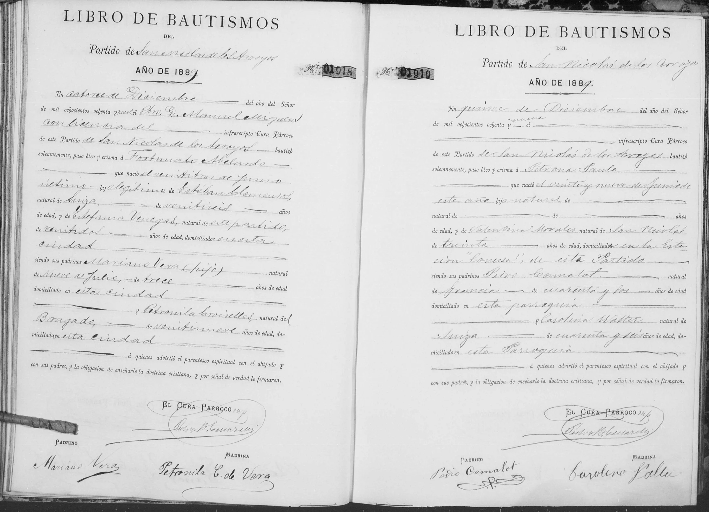
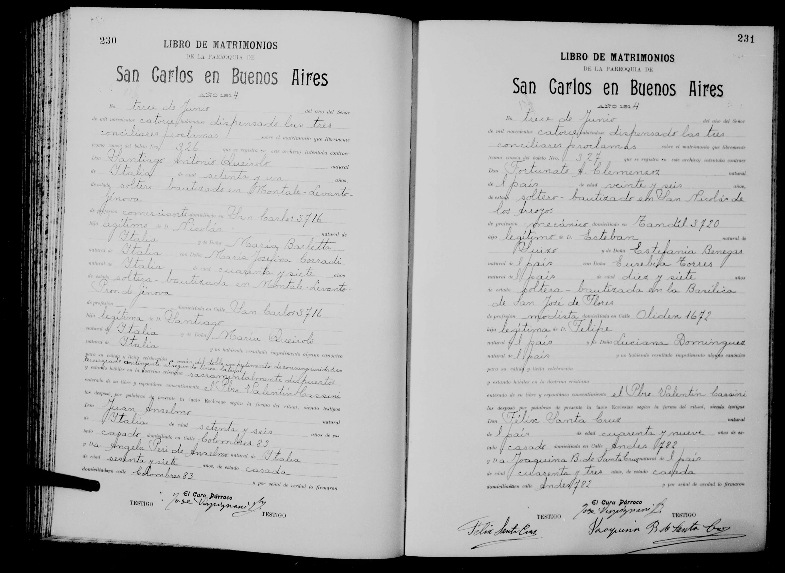

La historia
Fortunato Abelardo nació el 23 de junio de 1889 en San Nicolás de los Arroyos: entre el bautismo porteño de su hermana Maria Luisa Perceveranda Clemenzoz (julio de 1887) y el suyo, la familia dejó la calle Piedras y volvió al pueblo natal de Estefanía — la escala intermedia de la ruta Buenos Aires → San Nicolás → Santa Fe. Fue bautizado recién el 14 de diciembre, con óleo y crisma, por el Pbro. Manuel Miguens; el acta declara a Esteban «natural de Suiza» (26 años) y a Estefanía «natural de este partido» (22) — la confirmación local de su origen nicoleño. Padrinos: Mariano Vera (hijo), un chico de 13 años de Nueve de Julio, y Petronila Croiselles (lectura insegura), del Bragado, que firma «Petronila C. de Vera».
De adulto volvió a la ciudad de Buenos Aires: el 13 de junio de 1914 casó en la Parroquia de San Carlos (boleto N.º 327) — mecánico, domiciliado en Tandil 3720 (lectura insegura), declarado «de veinte y seis años» cuando le faltaban diez días para cumplir 25 — con Eusebia Torres, de 17 años, modista, porteña bautizada en la Basílica de San José de Flores, hija legítima de Felipe Torres y Luciana Domínguez. Los desposó el Pbro. Valentín Cassini.
Cronología
| Año | Fuente | Qué dice |
|---|---|---|
| 1889-06-23 | Acta de bautismo N.º 01918, Partido de San Nicolás de los Arroyos | Nace en San Nicolás; hijo legítimo de Esteban Clemenzoz (26, «natural de Suiza») y Estefanía Venegas (22, «natural de este partido») |
| 1889-12-14 | Ídem | Bautizado por el Pbro. Manuel Miguens; padrinos Mariano Vera (hijo), 13 años, y Petronila Croiselles «C. de Vera» |
| 1914-06-13 | Acta de matrimonio, Parroquia de San Carlos (Buenos Aires), boleto N.º 327 | Casa — mecánico, domiciliado en Tandil 3720 (lectura insegura) — con Eusebia Torres, 17, modista de Flores; testigos Félix y Joaquina Santa Cruz |
Qué falta / hipótesis
Líneas de investigación
- Buscar hijos de Fortunato y Eusebia en registros porteños (post-1914)
- Buscar su defunción (¿Buenos Aires?)
- Rastrear a Félix Santa Cruz (n. ~1865) y sus matrimonios (¿Fortunata → Joaquina?)
Fuentes
- Acta de bautismo N.º 01918, Partido de San Nicolás de los Arroyos, 14-12-1889 (imagen en su ficha)
- Acta de matrimonio, Parroquia de San Carlos en Buenos Aires, pág. 231, 13-06-1914 (imagen en su ficha)
Documentos

